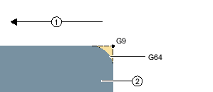

Nachdem Sie eine neue Kontur angelegt und den Startpunkt festgelegt haben, definieren Sie die einzelnen Konturelemente, aus denen sich die Kontur zusammensetzt.
Folgende Konturelemente stehen Ihnen zur Definition einer Kontur zur Verfügung:
Gerade vertikal
Gerade horizontal
Gerade diagonal
Kreis/Kreisbogen
Für jedes Konturelement füllen Sie eine eigene Parametermaske aus. Bei der Eingabe der Parameter unterstützen Sie verschiedene Hilfebilder, die diese Parameter erläutern.
Geben Sie in einige Felder keine Werte ein, geht der Zyklus davon aus, dass diese Werte unbekannt sind und versucht diese aus anderen Parametern zu berechnen.
Bei Konturen, bei denen Sie mehr Parameter eingegeben haben, als unbedingt notwendig, kann es zu Widersprüchen kommen. Versuchen Sie in diesem Fall, weniger Parameter einzugeben und so viele Parameter wie möglich vom Zyklus berechnen zu lassen.
Zwischen zwei Konturelementen können Sie als Übergangselement einen Radius, eine Fase oder bei geraden Konturelementen auch einen Freistich wählen. Das Übergangselement wird stets am Ende eines Konturelements angefügt. Die Anwahl eines Konturübergangselements erfolgt in der Parametermaske des jeweiligen Konturelements.
Ein Konturübergangselement können Sie immer dann verwenden, wenn es einen Schnittpunkt der beiden angrenzenden Elemente gibt und dieser aus den Eingabewerten berechnet werden kann. Andernfalls müssen Sie die Konturelemente Gerade/Kreis verwenden.
Für jedes Konturelement können Sie Zusatzbefehle in Form von G-Code eingeben. Die Zusatzbefehle (max. 40 Zeichen) tragen Sie in der erweiterten Parametermaske ein (Softkey "Alle Parameter").
Über zusätzliche G-Code-Befehle können Sie beispielsweise Vorschübe und M-Befehle programmieren. Es ist aber darauf zu achten, dass die Zusatzbefehle nicht mit dem generierten G-Code der Kontur kollidieren. Verwenden Sie deshalb keine G-Code-Befehle der Gruppe 1 (G0, G1, G2, G3), keine Koordinaten in der Ebene und keine G-Code-Befehle, die einen eigenen Satz benötigen.
Bei der Programmierung einer Kontur stehen folgende weitere Funktionen zur Verfügung:
Tangente an Vorgängerelement
Den Übergang zum Vorgängerelement können Sie als Tangente programmieren.
Dialogauswahl
Ergeben sich aus bisher eingetragenen Parametern zwei verschiedene Konturmöglichkeiten, müssen Sie eine davon auswählen.
Kontur schließen
Von der aktuellen Position können Sie die Kontur mit einer Geraden zum Startpunkt schließen.
Es wird im Bahnsteuerbetrieb (G64) gefahren. D. h. Konturübergänge wie Ecken, Fasen oder Radien werden evtl. nicht exakt bearbeitet.
Wenn Sie dies verhindern möchten, gibt es zwei verschiedene Möglichkeiten bei der Programmierung. Nutzen Sie Zusatzbefehle oder programmieren Sie gesonderten Vorschub für das Übergangselement.
Zusatzbefehl
Programmieren Sie für die Kontur erst die senkrechte Gerade und geben Sie für den Parameter Zusatzbefehl "G9" (Genauhalt satzweise) ein. Programmieren Sie anschließend die waagerechte Gerade. Die Ecke wird exakt bearbeitet, da der Vorschub am Ende der senkrechten Gerade kurzzeitig Null ist.
① | Bearbeitungsrichtung |
② | Werkstück |
Vorschub Übergangselement
Wenn Sie als Übergangselement eine Fase oder einen Radius gewählt haben, geben Sie im Parameter "FRC" einen verringerten Vorschub ein. Durch die langsamere Bearbeitung wird das Übergangselement genauer gefertigt.